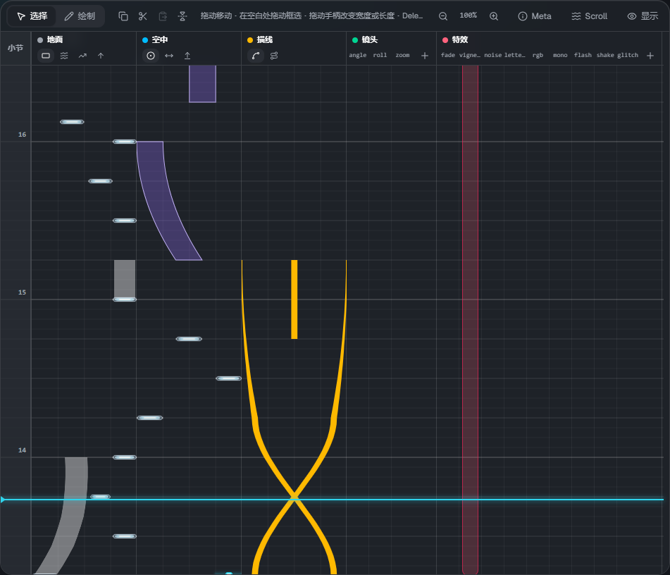
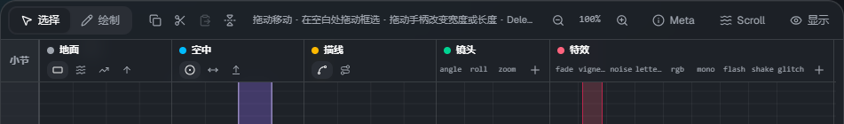
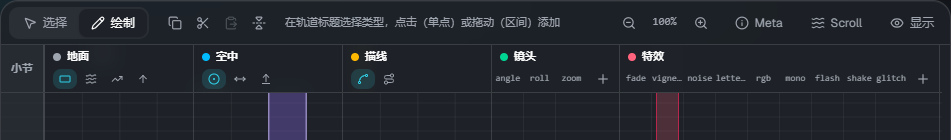
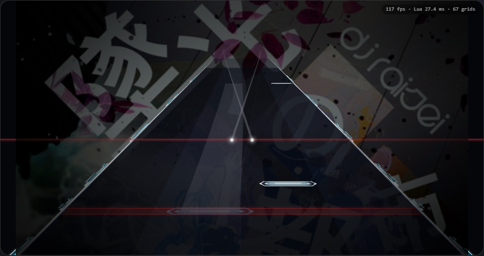

时间轴

时间从下往上流动（与 Malody 编辑器的方向相同）。浅蓝色的横线是当前位置（播放线）。
左端的数字是小节号，小节线按照 lane3d.ex 中 measure 行的设置绘制。
轨道
| 轨道 | 放置的内容 |
|---|---|
| 小节 | 小节刻度。点击或拖动可以把播放线移到该位置 |
| 地面 | 谱面（.mc）中的地面音符（Tap・Wipe・Slide・滑键）。按音符组显示不同颜色 |
| 空中 | AirTap・AirSlide・AirLift |
| 描线 | Trace（线）・Guide（地面上的带） |
| 镜头 | cam。每个项目（angle・roll・zoom 等）一列。点击 ＋ 可以添加列 |
| 特效 | fx。每种类型（fade・flash・glitch 等）一列。点击 ＋ 可以添加列 |
点击右上角的 「显示」 可以隐藏或显示轨道。
工具栏

从左到右依次是：选择 / 绘制切换，复制・剪切・粘贴・左右翻转，操作提示，缩放，Meta（谱面信息）・Scroll（流速），显示的轨道。
选择与移动（选择模式）
选择（V）模式下的操作：
- 点击元素选中，拖动可以移动
- 拖动选中元素上出现的手柄，可以改变宽度・长度・结束位置・描线的高度
- 在空白处拖动可以框选。Shift+点击 添加 / 移除选择
- Delete（或 Backspace）删除，Esc 取消选择
- 选中多个元素时可以一起移动
添加（绘制模式）

切换到 绘制（B），在轨道上点击或拖动即可添加元素。
- 地面・空中・描线轨道用标题中的小按钮选择类型（点击后会切换到绘制模式）
- 点击添加单点（Tap・Wipe・滑键・AirTap），拖动添加区间（Slide・AirSlide・Trace 等）。向上拖动到的位置就是结束位置
- 选中地面的 Slide 后，每个中继点上会出现手柄。中继点的添加・删除在属性中进行
- 镜头・特效：在想要的项目列上点击或拖动
- 新添加音符的宽度使用最后一次修改的宽度
已选中元素时点击轨道，会先取消选择（再点击一次即可添加）。
吸附
用工具栏的 拍吸附 和 横向吸附 设置放置和移动时的步长。
- 拍吸附：每拍的细分（1/1〜1/16）
- 横向吸附：横向位置的步长（8・16・32・64。64 约等于 1 条轨道）
- 用左边的开关切换开 / 关。按住 Alt 时两者都会暂时关闭
缩放
用 Ctrl+滚轮 或工具栏的 − / ＋，可以把每拍的高度调整为 25〜400%。点击倍率可以恢复到 100%。
复制・粘贴・左右翻转
| 操作 | 按键 |
|---|---|
| 全选 | Ctrl+A |
| 复制 / 剪切 | Ctrl+C / Ctrl+X |
| 粘贴（到播放线的位置） | Ctrl+V |
| 左右翻转 | H |
播放与预览

- Space 播放 / 暂停，Home 回到开头。工具栏上显示时间・小节:拍・BPM
- 预览直接运行皮肤的脚本，所以和游戏中的效果相同。修改元素后稍等片刻就会反映
- 打击音：播放时在地面与空中音符的头部发出声音（描线不发声）。点击 ▾ 可以调整音量
快捷键
| 按键 | 内容 |
|---|---|
| Space | 播放 / 暂停 |
| Home | 回到开头 |
| V / B | 选择模式 / 绘制模式 |
| Delete・Backspace | 删除选中的元素 |
| Esc | 取消选择 |
| Ctrl+A / C / X / V | 全选 / 复制 / 剪切 / 粘贴 |
| Ctrl+Z / Ctrl+Y | 撤销 / 重做（Ctrl+Shift+Z 也可以重做） |
| H | 左右翻转 |
| Alt（按住时） | 暂时关闭吸附 |
| Ctrl+滚轮 | 缩放 |
| Ctrl+S / Ctrl+Shift+S | 保存 / 下载保存 |
在输入框中输入文字时，除保存以外的快捷键都不会生效。